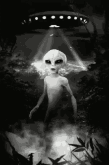
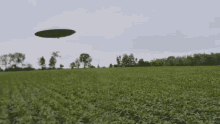

OVNIs
Washington (CNN) — El presidente de Estados Unidos, Donald Trump, dijo el miércoles que las imágenes del Pentágono que muestran “fenómenos aéreos no identificados” son un “espectáculo de video” y le dijo a Reuters que se pregunta “si es real”. A principios de esta semana, el Pentágono publicó oficialmente tres videos que muestran lo que parecen ser objetos voladores no identificados (OVNI) que se mueven rápidamente mientras son grabados con cámaras infrarrojas. En dos de los videos se escucha a miembros de las fuerzas armadas que reaccionan con asombro ante la rapidez con que se mueven los objetos. Una voz especula que podría tratarse de un dron. “Me pregunto si es real”, dijo Trump sobre los videos. “Ese es un espectáculo de video”.
Defensa de EE.UU. divulga videos de ovnis
La Marina había reconocido en septiembre la veracidad de los videos, que habían sido publicados previamente por una empresa privada. Los publicaron oficialmente esta semana “para aclarar cualquier idea errónea del público sobre si las imágenes que han estado circulando eran reales o no, o si hay más en los videos”, según la portavoz del Pentágono Sue Gough. En 2017, uno de los pilotos que vio uno de los objetos no identificados en 2004 le dijo a CNN que se movía de forma que no podía explicar. “A medida que me acercaba … aceleró rápidamente hacia el sur y desapareció en menos de dos segundos”, dijo el piloto retirado de la Armada de los Estados Unidos, David Fravor. Trump, que a menudo ha difundido teorías de conspiración, es escéptico sobre los ovnis. En una entrevista con ABC News el año pasado, el presidente dijo que había tenido una reunión sobre el tema, pero que es escéptico de que los objetos que se mueven rápidamente sean algo extraterrestre. “Tuve una reunión muy breve al respecto”, dijo en la entrevista. “Pero la gente dice que está viendo ovnis. ¿Lo creo? No particularmente”. El gobierno ha estado estudiando en silencio la posibilidad de los ovnis durante décadas, y el Pentágono estudió previamente grabaciones de encuentros aéreos con objetos desconocidos como parte de un programa clasificado cerrado desde entonces a instancias del exsenador Harry Reid de Nevada. El programa se lanzó en 2007 y finalizó en 2012, según el Pentágono, porque evaluaron que había prioridades más altas que necesitaban financiación.
Ovni son las siglas de objeto volátil no identificado, es cada uno de los supuestos aparatos voladores de formas más o menos parecida a la de un plato invertido y de origen aparentemente extraterrestre que parece haber sido visto por personas. No se sabe con exactitud el momento en que comenzó la historia de los ovnis, aunque la arqueoastronomía indico que las evidencias del fenómenos ovni se remonta a la antigüedad pero no fue sino hasta el año 1947 que se produce un avistamiento cuando el piloto civil norteamericano Kenneth Arnold observo mientras volaba 9 artefactos aéreos muy extraños cerca de Mount Rainier, en el estado Washington. Luego de lo indicado anteriormente, existen millones de testimonios alrededor del mundo que afirman a ver visto un ovni y muchos de ellos registran sus apariencias a través de fotografías o videos, originando debates sobre la probabilidad de existir vida fuera del planeta tierra. Según los testimonios, los ovnis presentan las siguientes características: superficie metálica con luminosidad, velocidades altas: los observados por Arnold presentaban una velocidad aproximadamente de 1400 km/h, gozan de diversas formas y tamaños, por último, poseen capacidad de aparecer y desaparecer instantáneamente en un punto del espacio, Por otro lado, la ufología u ovnilogía, es la ciencia encargada de estudiar el fenómeno de ovni a partir de materiales recopilados como: fotografías, videos, testimonios, informe de radar, entre otros, para descubrir la procedencia del fenómeno desconocido y, de ser identificado el objeto pierde la clasificación de ovni.
OVNIs